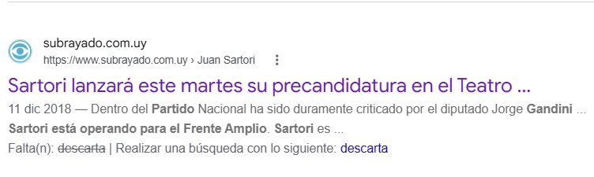

ESCRITOS · POLÍTICA
Política para tontos: mensajes básicos, bien dirigidos, y una sociedad que no pregunta
Durante años guardé recortes, capturas y cadenas sobre nuestra política. Leídos hoy, cuentan una misma historia: el mensaje público se volvió deliberadamente básico, está bien dirigido y funciona. Este artículo intenta entender por qué, y qué dice eso de nosotros.
Un archivo que no sabía para qué guardaba
Entre 2018 y 2022 fui juntando en una carpeta unos noventa archivos. Hay notas de prensa copiadas, capturas de redes, cadenas de WhatsApp, comparaciones con cifras, audios y algunos textos míos. Siempre pensé en hacer algo con ellos.
Releídos ahora, lo que más llama la atención no es lo que dicen, sino cómo lo dicen. Casi todo cabe en una imagen, una cifra o una frase. Casi nada invita a pensar dos veces.
Lo digo con honestidad: el archivo también refleja mis propias lecturas. Eso es parte del tema, porque uno tiende a guardar lo que confirma lo que ya piensa.
Por eso este texto no busca decir quién tiene razón. Usa ese archivo como registro de una época para mirar cómo se comunica la política en Uruguay, sea cual sea el partido.
Qué llamo “política para tontos”
No quiere decir que la gente sea tonta. Quiere decir que el mensaje trata a quien lo recibe como si lo fuera. Y lo preocupante es que muchas veces acierta.
Este tipo de mensaje tiene tres rasgos:
- Es corto: una foto, un número o una consigna, sin contexto.
- Apela a la emoción o a la identidad: indignación, miedo, orgullo de pertenecer a un bando.
- Sabe a quién le habla: no busca convencer al que piensa distinto, sino activar al que ya está de acuerdo.
La idea no es nueva. A fines de los noventa, el politólogo Giovanni Sartori advertía en Homo videns. La sociedad teledirigida que la imagen le estaba quitando el lugar a la palabra. Para él, la televisión no era solo un medio de comunicación: formaba un nuevo tipo de persona, que ve más de lo que entiende (reseña en Communication Papers). En la política, eso daba lugar a lo que llamó “vídeo-política” (Marcial Pons).
Desde la historia, Steve J. Stern ayuda a ver otra cara del mismo fenómeno. Estudiando la memoria en el Chile de Pinochet, mostró que la memoria colectiva es un terreno de disputa política: una “lucha por las mentes y los corazones” (Anuario de Derechos Humanos, U. de Chile). En esa lucha ganan los relatos que logran ordenar muchos recuerdos sueltos en una imagen simple y compartida, lo que él llamó “memorias emblemáticas” (Duke University Press). El mensaje básico funciona de forma parecida: no inventa el malestar, le da una forma fácil de recordar y repetir.
Noam Chomsky mira el problema desde los medios. En Los guardianes de la libertad (1988), escrito con Edward S. Herman, propuso el “modelo de propaganda”: cinco filtros, como la propiedad de los medios o la dependencia de la publicidad, que deciden qué se publica y cómo (Revista Latina de Comunicación Social; Pineda Cachero, Ámbitos). Su modelo explica cómo funcionan los medios más que sus efectos en el público, pero ayuda a entender que el mensaje simple no es un accidente.
Hay además una ironía que viene al caso. Por internet circula desde hace años un decálogo de “10 estrategias de manipulación mediática” atribuido a Chomsky. Una de ellas es, justamente, dirigirse al público como si fuera un niño. Pero el texto no es suyo: lo publicó en 2002 el escritor francés Sylvain Timsit, y Chomsky negó haberlo escrito (Mimikama; Conclusión). Un texto contra la manipulación se volvió viral con un autor equivocado, porque un nombre famoso lo hacía más creíble.
Veinte años después, el fenómeno tiene otro nombre. En 2016 el Diccionario Oxford eligió “posverdad” como palabra del año. La definió como la situación en que los hechos objetivos influyen menos en la opinión pública que las emociones y las creencias personales (Univision). La Real Academia Española también incorporó el término (El Comercio).
Sartori hablaba de la pantalla del televisor. Hoy la pantalla está en el bolsillo, y cada uno reenvía el mensaje a sus contactos. El receptor pasó a ser también distribuidor.
Seis técnicas, vistas en el archivo
Los casos están ordenados por la técnica que usan, no por el partido al que favorecen. Cada uno se puede comprobar en la prensa.
1. La imagen que “habla por sí sola”
En diciembre de 2018 circuló por el mundo una foto tomada en París durante las protestas de los “chalecos amarillos”. Mostraba a una joven sonriente que filmaba los disturbios desde adentro de un local de comida rápida. Se compartía como símbolo de la frivolidad de nuestro tiempo.
El autor de la foto, el fotógrafo ruso Ilya Varlamov, explicó después que el local estaba cerrado y que la joven, probablemente empleada, empezó a posar al ver las cámaras (Montevideo Portal). Según la misma nota, horas después la policía golpeó a manifestantes dentro del local. Hay un video de esa violencia policial en un local de la cadena en la avenida Wagram, el 1 de diciembre (CLPress).
La imagen “hablaba por sí sola”, pero decía algo que no había pasado. Lo que sí pasó quedó fuera del encuadre.
Pieza del archivo · Montevideo Portal, “Una imagen distinta de la revuelta de París se viraliza como ‘símbolo de los tiempos’”, diciembre de 2018. Sin firma; foto de Ilya Varlamov. Copia guardada el 10/12/2018.
2. El miedo que mezcla verdades y mentiras
Durante la pandemia guardé una cadena que repetía “Quedate en casa” como burla. Mezclaba quejas reales, como perder el trabajo, seguir pagando impuestos o no poder ver a la familia, con afirmaciones falsas: antenas radiactivas, una “agenda mundial” y un supuesto origen del velo islámico inventado.
Esa mezcla es lo que la hacía eficaz. Quien se reconocía en una queja verdadera aceptaba también lo demás. Según el PNUD, en los primeros meses de 2020 la desinformación sobre el covid se difundió rápido en Uruguay, en un momento sensible por las elecciones departamentales previstas para mayo (PNUD).
Pieza del archivo · Cadena de autor anónimo, “Sabías que cubrirse la nariz y boca quiebra la voluntad e individualidad”, texto de circulación viral durante la pandemia. Copia guardada el 18/1/2021. Contiene afirmaciones falsas: se muestra solo como ejemplo.
3. El caso judicial convertido en hinchada
En febrero de 2020 fue detenida en Colonia la contadora Maya Cikurel, pareja del entonces ministro de Educación y Cultura, Pablo da Silveira, por un pedido de Panamá vinculado a la trama Odebrecht (El Observador). El 8 de junio la jueza María Helena Mainard negó la extradición por una razón formal: entendió que el pedido debía venir del Poder Judicial panameño y no de la Fiscalía (Montevideo Portal). La Fiscalía apeló y la decisión fue ratificada (Montevideo Portal). En Panamá siguió investigada (El Observador).
El caso tenía preguntas serias: cómo se interpreta un tratado de extradición o qué conflicto de intereses puede haber. Pero en los comentarios de la nota que guardé casi nadie hablaba de eso. Había insultos, burlas y dos bandos festejando o indignándose. El debate jurídico quedó tapado por la camiseta.
Pieza del archivo · Caras y Caretas, “Dejá vu: no ha lugar el pedido de extradición de Maya Cikurel”, 8 de junio de 2020. Sin firma; incluye 45 comentarios de lectores. Copia guardada el 6/11/2020.
4. El detalle que se vuelve símbolo
En 2016 se supo que el vicepresidente Raúl Sendic se presentaba desde hacía años como licenciado en Genética Humana, y que no tenía ese título. Él mismo lo reconoció ante El Observador (Montevideo Portal).
Había temas más complejos para discutir, como su gestión en Ancap. Pero una sola palabra, “licenciado”, era fácil de entender y de repetir. Por eso se volvió el símbolo de todo lo demás, en todos los bandos.
5. La vara que cambia según quién sea
En 2017 el Frente Amplio denunció penalmente al intendente de Soriano, Agustín Bascou (Partido Nacional), porque la intendencia cargaba combustible en estaciones de su propiedad (El Observador). La Jutep concluyó que había actuado con falta de probidad, mientras que su partido solo consideró un leve apercibimiento (El Observador). Años después fue condenado por ese caso (Montevideo Portal).
Juntos, Sendic y Bascou muestran una contradicción que atraviesa a todos: cada partido pide dureza con los ajenos y comprensión con los propios. Y buena parte del público hace lo mismo.
Pieza del archivo · Teledoce (Telemundo), “El intendente de Soriano volverá a declarar ante la justicia este jueves como indagado tras el hallazgo de un pendrive que se había perdido”. Enlace guardado el 6/12/2018.
6. El archivo con el diario del lunes
En diciembre de 2018 guardé dos piezas sobre un mismo cruce dentro del Partido Nacional. En la primera, el entonces diputado Jorge Gandini declaraba a Informativo Carve que podía plantear sus dudas “sobre la ética o la moral” del precandidato Juan Sartori. Agregaba que no descartaba que estuviera “operando para el Frente Amplio” y que, si se postulaba, propondría enviarlo a la Comisión de Ética del partido. Días después, Subrayado recogía esas críticas al informar el lanzamiento de la precandidatura. Releídas hoy, las dos piezas cobran otro sentido: años después, los dos dirigentes quedaron en el centro de debates sobre transparencia.
Pieza del archivo · Captura de una nota web titulada “Gandini dijo que no descarta que Sartori esté operando para el Frente Amplio”, con declaraciones a Informativo Carve (foto: Parlamento). Medio no identificado. Captura guardada el 9/12/2018 como “Gandini habla de Sartori”.

Pieza del archivo · Subrayado, “Sartori lanzará este martes su precandidatura en el Teatro…”, 11 de diciembre de 2018. La nota ya no está disponible en el sitio; se conserva su vista previa en el buscador, capturada el 5/11/2026.
Juan Sartori. En noviembre de 2023 la Jutep lo declaró omiso por no presentar, en reiteradas ocasiones, la declaración jurada de su esposa, Yekaterina Rybolóvleva (Montevideo Portal). Antes, la Suprema Corte había fallado a favor de la Jutep. La sanción fue la retención del 50% de su sueldo de senador (El Observador). Sartori sostuvo que no podía obligar a su esposa a declarar y que donaba su salario (Prensa Mercosur).
En Argentina es parte de una disputa entre accionistas por el grupo Bioceres. En marzo de 2026 la Justicia de Santa Fe decretó la quiebra de Bioceres S.A. en medio de esa pelea (Canal 26). Los fundadores lo acusan de una maniobra para quedarse con activos como Rizobacter; el otro bando acusa al CEO, Federico Trucco, de haber vaciado la empresa (El Cronista). Son acusaciones entre partes, sin fallo sobre su conducta.
Jorge Gandini. Hoy director de la Administración Nacional de Puertos por la oposición, acumula tres frentes:
- Omisión ante la Jutep. En octubre de 2026 se informó que él y su esposa no incluyeron en sus declaraciones de 2025 un crédito de unos US$ 60.000 frente a Conexión Ganadera, empresa en concurso de acreedores. En 2023 sí lo habían declarado, como 84 vacas de cría por $ 2.353.150 (Búsqueda). La Jutep recibió dos denuncias y las tramita (Búsqueda). Gandini explicó que no lo declararon porque lo dieron “todo por perdido” (la diaria).
- Operación Trazador. En septiembre de 2026 fue condenado por lavado de activos Pablo Leiva, asesor vinculado a un edil blanco. Leiva hacía depósitos en un local de cobranzas que está a nombre de la esposa de Gandini. La fiscalía debe decidir si investiga el rol de ese local; Gandini negó que allí hubiera maniobras de lavado (El Observador).
- Disputa con Lobraus. Como director de la ANP calificó a la empresa logística Lobraus de “deudor contumaz”, y la firma lo denunció penalmente. La Fiscalía archivó esa denuncia por falta de pruebas (El Observador). La empresa anunció además una demanda civil por US$ 1 millón (El Observador).
En agosto de 2023, en otro cruce público con Sartori, Gandini había dicho: “tengo hechas las declaraciones juradas mías y de mis familiares, y no tengo nada pendiente” (El Observador).
Nada de esto estaba a la vista cuando se guardaron esas piezas. El archivo no adelanta el futuro: solo permite comparar lo que se decía con lo que vino después. Y esa comparación es justamente la que el mensaje rápido nunca hace.
Y también: la cifra suelta
En el archivo hay comparaciones de años con un solo número, de distintos signos políticos. Pueden ser ciertas, pero casi nunca dicen de dónde sale el dato ni con qué se compara. Funcionan como un marcador de fútbol: no explican el partido, solo dicen quién va ganando.
¿Por qué funciona?
No hay una sola explicación. Estas son las que me parecen más razonables, y probablemente actúan juntas:
- Falta de tiempo y exceso de información. Leer una nota entera cuesta; mirar una imagen, no. El mensaje corto gana porque llega primero.
- Confirmación. Compartimos lo que confirma lo que ya pensamos. Mi propio archivo es prueba de eso.
- Desconfianza. Si no se cree en los medios ni en la justicia, cualquier dato del “otro lado” se descarta de entrada, y la consigna propia ocupa ese lugar.
- Movilizar, no convencer. Muchos de estos mensajes no buscan cambiar la opinión de nadie. Buscan que los propios se indignen, se activen y reenvíen.
- Una parte es verdad. Como en la cadena de la pandemia, el mensaje funciona mejor cuando toca un malestar real. La mentira viaja montada en la queja legítima.
Lo que preocupa
En ciertos ámbitos de estudio estos mensajes se discuten y se desarman todo el tiempo. Pero esa conversación casi no llega al espacio público. Afuera, el mensaje básico circula, se repite y parece no molestar a casi nadie.
El historiador argentino Carlos Altamirano ha estudiado justamente esa distancia entre los “hombres de ideas” y el público, en trabajos como Intelectuales. Notas de investigación y el ensayo “Intelectuales y pueblo” (Prismas; Página/12). Lecturas de su obra señalan que la especialización del lenguaje intelectual puede terminar en desconexión y elitismo (Coudannes Aguirre, 2007). Es una advertencia también para nosotros: si quienes analizamos no logramos hablarle a la sociedad, le dejamos el espacio libre al mensaje simple.
Si los mensajes son tan simples y aun así funcionan, es porque quien los diseña conoce bien a su público. Esa es la parte inquietante: la simpleza no es descuido, es estrategia.
Sartori ya advertía sobre un ciudadano que opina sin haber tenido la ocasión de entender. La pregunta que me queda es si estamos ante una sociedad menos reflexiva, o ante una sociedad con menos tiempo, menos confianza y menos espacios para pensar juntos. No tengo datos para responderla con certeza. Pero cualquiera de las dos respuestas debería preocuparnos, y las dos pasan por la educación.
Para cerrar, una pregunta abierta
Este archivo nació como una colección de pruebas contra los otros. Terminó siendo también un espejo: muestra lo que los políticos nos dicen, pero también lo que yo elegía guardar.
No propongo una solución. Propongo un hábito sencillo, antes de compartir cualquier mensaje político:
- ¿De dónde viene y quién lo firma?
- ¿Qué le falta: el contexto, la fecha, la comparación?
- ¿Lo compartiría igual si favoreciera al otro bando?
Si la política nos habla como a tontos, la única respuesta posible es no comportarnos como tales.
Fuentes
Marco teórico
- Sartori, Homo videns. La sociedad teledirigida – ficha editorial (Marcial Pons)
- Echazarreta Soler, reseña de Homo videns (Communication Papers, 2021)
- Entrevista a Steve J. Stern (Anuario de Derechos Humanos, Universidad de Chile, 2012)
- Stern, Remembering Pinochet’s Chile (Duke University Press, 2004)
- Pedro, “Evaluación crítica del modelo de propaganda de Herman y Chomsky” (Revista Latina de Comunicación Social, 2009)
- Pineda Cachero, “El modelo de propaganda de Noam Chomsky” (Ámbitos, 2001)
- ¿Las “10 estrategias de manipulación” son de Chomsky? Verificación (Mimikama)
- Las 10 estrategias de manipulación masiva descritas por Sylvain Timsit (Conclusión)
- Oxford elige “posverdad” como palabra del año (Univision)
- La “posverdad” ingresa al diccionario de la RAE (El Comercio)
- Altamirano, Intelectuales. Notas de investigación – ficha (Prismas, 2007)
- Altamirano, Para un programa de historia intelectual y otros ensayos – reseña (Página/12, 2005)
- Coudannes Aguirre, “¿Para quién escriben los intelectuales?” (Interpretaciones, 2007)
Casos 1 a 5
- Una imagen distinta de la revuelta de París se viraliza (Montevideo Portal)
- Violencia policial en un Burger King, 1/12/2018 (CLPress)
- Uruguay’s Information Integrity COVID-19 Initiatives (PNUD)
- Panamá envió solicitud de extradición para pareja de Da Silveira (El Observador)
- Maya Cikurel no será extraditada (Montevideo Portal)
- Ratifican que Maya Cikurel no será extraditada (Montevideo Portal)
- Fiscalía panameña llama a juicio a Maya Cikurel (El Observador)
- Ante polémica, Sendic aclaró que sí cursó una licenciatura (Montevideo Portal)
- Frente Amplio presentó denuncia penal contra intendente Bascou (El Observador)
- Jutep acusó a Bascou de falta de probidad (El Observador)
- Exintendente Bascou fue condenado (Montevideo Portal)
Caso 6: Sartori y Gandini
- Sartori declarado omiso por la Jutep (Montevideo Portal)
- Retención del 50% del salario de Sartori (El Observador, 2023)
- Sartori sancionado; asegura que dona su sueldo (Prensa Mercosur, 2023)
- Quiebra de Bioceres S.A. (Canal 26, 2026)
- La Bioceres original dispara contra el CEO de la biotecnológica (El Cronista)
- Gandini y su esposa entre los acreedores de Conexión Ganadera (Búsqueda, 2026)
- La Jutep recibió dos denuncias contra Gandini (Búsqueda, 2026)
- Gandini y su esposa no declararon ante Jutep el crédito (la diaria, 2026)
- Renuncia de Lucio Leiva tras la condena de su padre (El Observador, 2026)
- Fiscalía archivó denuncia de Lobraus contra Gandini (El Observador)
- Lobraus anunció demanda contra Gandini por US$ 1 millón (El Observador)
- Polémica entre Gandini y Sartori, agosto de 2023 (El Observador)
Archivo personal
- Carpeta de archivos propia, 2018–2022: recortes, capturas y cadenas citados en el texto.
Las piezas del archivo se reproducen solo como material de análisis; cada una indica su fuente original. Las opiniones de este texto son personales.